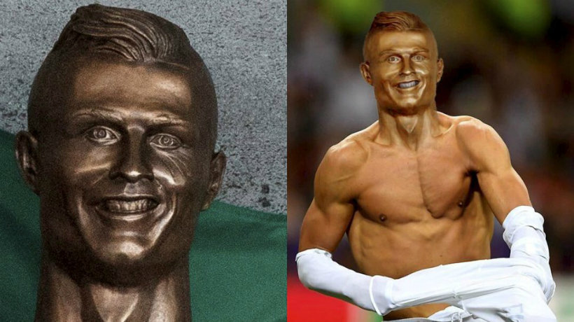

¿Qué me gusta hacer en mi tiempo libre?
En mis ratos libres disfruto mucho de jugar videojuegos, practicar ejercicios de programación y todo tipo de actividades interesantes en mi computador.

Me gusta mucho también jugar futbol y cada vez que puedo me gusta salir a practicarlo